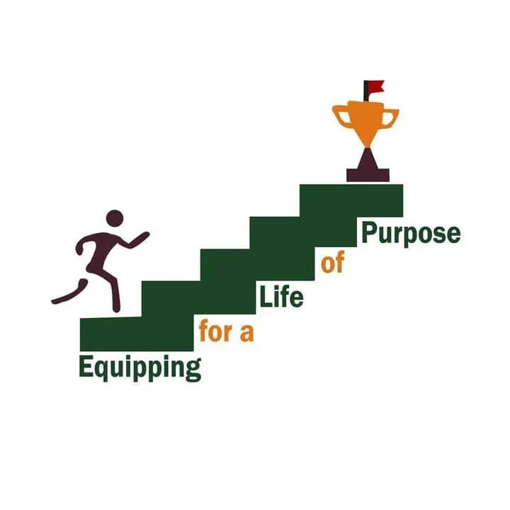
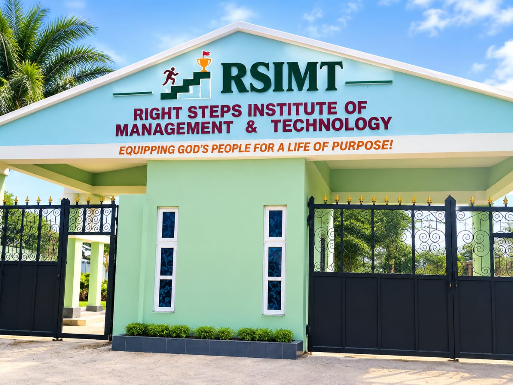
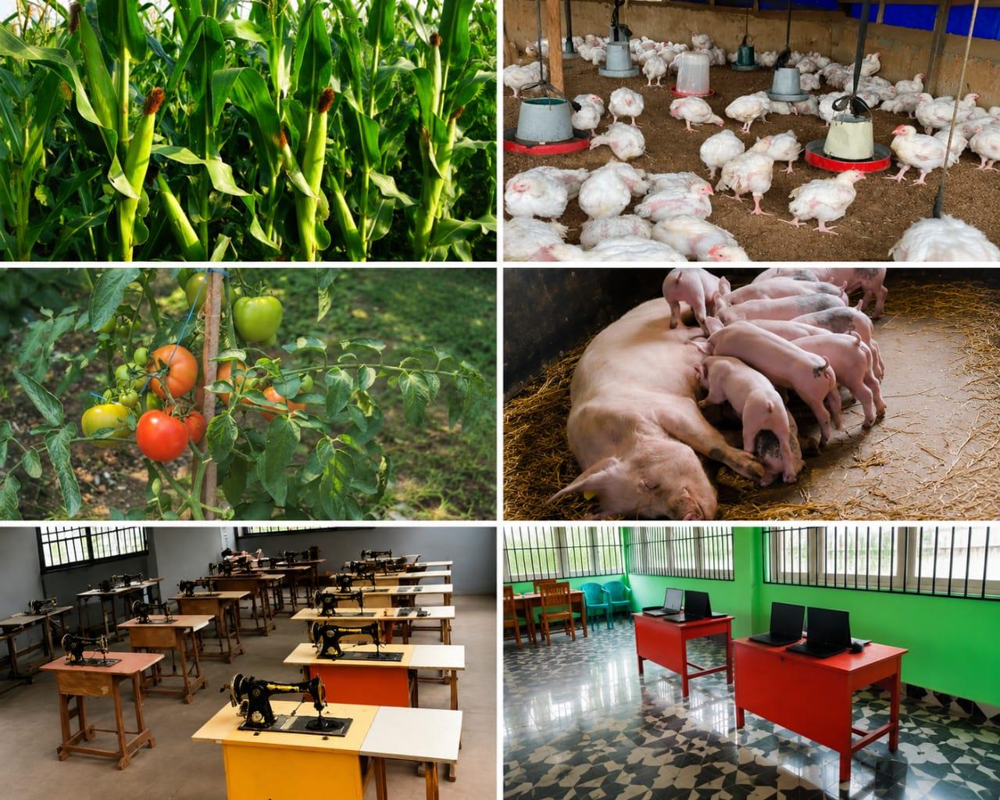

Management
Develop knowledge and practical skills for management and organizational environments.

A learning environment focused on education, practical skills, technology and personal development.

Right Steps Institute of Management & Technology TVET Satellite Centre.
RSIMT is designed to provide students with opportunities to develop knowledge, practical abilities and skills that can prepare them for their future careers.
Through academic learning and practical experiences, students can discover their interests and develop useful professional skills.
Explore the learning opportunities available at RSIMT.
Develop knowledge and practical skills for management and organizational environments.
Build technology-related knowledge and practical digital skills.
Gain experience through practical and skill-based learning opportunities.
JSB is an institute under RSIMT focused on Biblical Studies and related learning opportunities.
Learn More →Learn how to teach, care for and support young children during their early years of development.
Learn More →The Work-to-Learn Program is an important part of the practical learning experience we want to showcase at RSIMT.
It provides an opportunity to connect learning with practical experience and skill development. It a program where the students of RSIMT work to gain experience and a medium to earn money to also support theirselves.

Access important RSIMT services quickly and easily.
Connecting knowledge with useful skills.
Encouraging digital knowledge and innovation.
Supporting students as they develop their abilities.
Preparing learners for future opportunities.
A 2-year National Diploma programme designed to equip students with practical knowledge and skills for today's technology-driven world.
Software development, programming, web and mobile app development, database systems, networking and cloud technologies.
Students gain hands-on experience through practical projects, internship opportunities and project-based learning.
Graduates can pursue opportunities in software development, IT support, web and app development, networking and database management.
Duration: 2 Years
Mode: Full-Time | On-Campus Learning
Location: Obuzor-Asa, Ukwa West LGA, Abia State